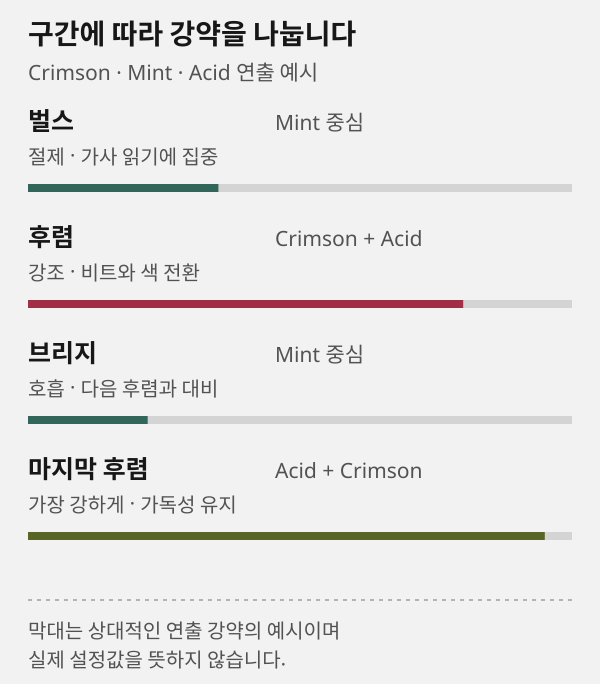
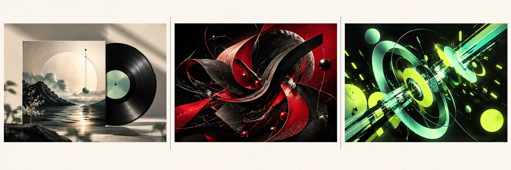
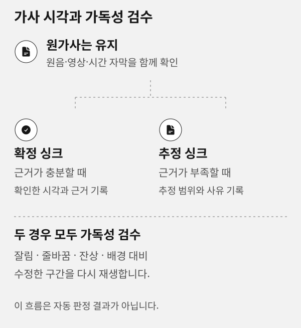

JIZURA: 가사와 비트의 모션그래픽 설정
이 페이지의 기능과 다음 단계를 확인한 뒤 제작실에서 작업하세요.
이 문서 목차
이 페이지의 역할
JIZURA는 가사, 리듬, 색, 전환을 중심으로 모션그래픽을 조절하는 전용 편집기입니다. 공통 제작실에서는 JIZURA 제작 요청을 저장하고, 이 화면에서는 추천을 비교하거나 세부 값을 조절합니다.
시작 순서
- 현재 원음과 프로젝트 이름을 확인합니다.
- 추천 스타일을 여러 개 비교하고 곡에 맞는 출발점을 고릅니다.
- 테마, 분위기, 화면비, 해상도, 프레임레이트를 정합니다.
- 움직임, 색수차, 밀도, 배경 전환, 글리치, 장식, 질감을 조절합니다.
- 가사 표시와 비트 반응을 미리 본 뒤 설정을 저장합니다.
- 실제 제작 결과는 내 작업물에서 가사·자막·스토리보드·검수 기록과 함께 확인합니다.
추천과 사용자 설정
화면에 표시된 추천 근거를 먼저 확인하세요. 곡 해석 정보가 연결되면 그 내용을 참고하고, 없을 때는 추정 BPM과 음량 변화로 리듬 보조 추천을 제공합니다. 장르 입력과 제작 AI의 가사 해석으로 방향을 보완할 수 있습니다. 추천 하나만 사용해도 되고, 벌스·후렴·브리지의 에너지에 맞춰 여러 효과를 조합할 수도 있습니다. 추천을 적용한 뒤에도 모든 값은 직접 바꿀 수 있습니다.
- 벌스Mint 중심
절제 · 가사를 읽는 데 집중
- 후렴Crimson + Acid
강조 · 비트와 색 전환
- 브리지Mint 중심
호흡 · 다음 후렴과 대비
- 마지막 후렴Acid + Crimson
가장 강하게 · 가독성은 유지
Crimson · Mint · Acid 조합의 연출 예시입니다. 막대는 상대적인 표현 강약이며 실제 설정값이 아닙니다.
SVG 도식 원본 보기

도식의 색과 값은 설명용입니다. 실제 곡의 후렴이 항상 가장 강해야 하는 것은 아니며, 가사가 촘촘한 구간은 후렴이어도 글리치·장식을 낮추는 편이 읽기 쉽습니다.

원본 크기로 펼치기
- 세 방향 중 곡의 분위기에 가까운 출발점을 고릅니다.
- 벌스·후렴·브리지에서 효과 강약을 다르게 둘지 결정합니다.
- 실제 설정에서는 가사 대비와 줄바꿈을 먼저 확인하고, 장식은 마지막에 올립니다.
주요 값의 뜻
- 움직임글자·도형·배경이 반응하는 정도입니다. 느린 곡은 낮게, 드롭이 강한 곡은 구간별로 높게 둡니다.
- 색수차와 글리치박자에 맞는 시각적 흔들림입니다. 가사가 작거나 배경이 복잡하면 값을 낮춥니다.
- 밀도와 장식화면에 동시에 나타나는 요소의 양입니다. 후렴에는 올릴 수 있지만 벌스에서 너무 높으면 가독성이 떨어집니다.
- 배경 전환분위기가 바뀌는 구간에서 장면을 전환하는 정도입니다. 전환은 가사 줄바꿈·후렴 진입 같은 음악적 이유에 맞춥니다.
- 질감화면 표면의 입자·빛·재질감입니다. 강한 질감은 배경을 풍부하게 만들지만 글자 대비를 낮출 수 있습니다.
가사와 싱크
원가사는 승인된 원문을 유지합니다. 자동 음성 인식은 싱크 검수의 보조 근거일 뿐 원가사를 자동 교체하지 않습니다. 확정 시각과 추정 시각은 분리해 기록하고, 추정 행은 결과 검수에서 다시 확인합니다.
가창 시작과 끝을 직접 확인할 근거가 충분한가요?
- 확정 싱크
- 근거가 충분할 때
- 확인한 시각과 근거를 기록합니다.
- 추정 싱크
- 근거가 부족할 때
- 추정 범위·사유를 남기고 다시 확인합니다.
두 경우 모두 가독성 검수
잘림·줄바꿈·잔상·배경 대비를 확인하고, 수정한 구간을 다시 재생합니다. 자동 판정 결과를 뜻하지 않습니다.
SVG 도식 원본 보기

예를 들어 반복 후렴의 발음이 불명확하면 원가사는 그대로 두고 추정으로 남깁니다. 원음 재생, 자막, 스토리보드를 대조해 근거가 생겼을 때만 확정으로 바꿉니다.
복사해 쓸 JIZURA 제작 요청 예시
이 음악을 JIZURA 모션그래픽으로 제작해 주세요.
추천 스타일을 3개 제시하고, 가장 어울리는 조합안은 벌스·후렴·브리지·마지막 후렴으로 나누어 효과 강약을 설계해 주세요.
벌스는 가사 가독성을 우선하고, 후렴은 비트 반응·색 전환·키네틱 타이포그래피를 강화해 주세요.
원가사 원문은 유지하며, 가창 시각이 불확실한 행은 추정 싱크로 분리해 검수 기록에 남겨 주세요.저장 전 설정 예시
예시 곡 ‘새벽의 온도’에 다음처럼 출발점을 잡을 수 있습니다. 이는 고정 프리셋이 아니라 조정 가능한 예시입니다.
- 벌스움직임·글리치·장식은 낮게, 글자 대비와 두 줄 줄바꿈을 우선합니다.
- 후렴움직임·배경 전환을 올리고 비트에 맞춰 색 변화를 넣습니다.
- 브리지질감과 움직임을 낮춰 다음 후렴의 대비를 만듭니다.
- 마지막 후렴색수차·전환을 한 단계만 올린 뒤, 가사가 겹치면 장식부터 낮춥니다.
재생과 저장의 한계
미리보기는 현재 설정을 확인하는 화면입니다. 설정 저장은 편집 프로젝트와 연결한 글꼴 자산을 보관하며 MP4를 만들지 않습니다. MP4 만들기는 실제 내보내기를 시작하고, 렌더가 끝나면 영상을 내려받습니다. 내보낸 파일을 공통 프로젝트 결과에 등록하면 내 작업물에서 원가사·자막·스토리보드와 함께 받습니다.
빠른 설정과 전체 편집기
- 스타일은 전체 화면의 재질과 글자 표현의 출발점입니다. 자동 구성 테마는 구성할 방식이며, 바꾼 뒤 선택한 방향으로 재구성을 눌러야 반영됩니다.
- 분위기는 기법의 인상과 움직임을 조절합니다. 화면비는 가로·세로·정사각 중 올릴 곳에 맞추고, 해상도와 프레임레이트가 높을수록 작업량이 늘어납니다.
- 음원 포함을 끄면 무음 영상을 내보냅니다. 중앙 비우기는 나중에 다른 화면을 합성할 자리를 확보합니다. 합성 배경의 그린·블랙은 합성에 쓸 바탕이며 MP4의 투명 배경을 뜻하지 않습니다.
- 전체 편집기는 가사 입력·LRC·줄별 타이밍, 컷과 기법 잠금, 글꼴·팔레트, PNG·LRC·AE 데이터 등 공식 편집기의 세부 작업에 사용합니다. 긴 기능 설명은 이 가이드에서 확인하고, 편집 화면에서는 설정에 집중합니다.
오류와 복구
추천이 마음에 들지 않아요
다른 추천을 적용한 뒤 세부 값을 조절합니다. 한 곡의 전 구간을 같은 강도로 처리할 필요는 없습니다. 가사가 긴 구간은 글리치·장식을 줄이고, 후렴에서만 대비를 높여 보세요.
설정이 사라진 것 같아요
같은 원음과 프로젝트로 페이지를 다시 열면 저장한 설정이 복원됩니다. 원음이 바뀌면 이전 곡의 타이밍을 새 곡에 그대로 적용하지 않습니다.
가사가 잘 안 보여요
글리치·장식·질감을 낮추고 배경 전환을 줄입니다. 두 줄 줄바꿈과 대비를 우선한 뒤 실제 영상에서 다시 검수하세요.
자주 묻는 질문
여러 스타일을 써도 되나요
됩니다. 리듬이 강한 곡은 구간별로 효과 강약을 나누면 표현력이 커질 수 있습니다. 다만 같은 가사의 표시 규칙을 유지해 읽기 어렵지 않게 만드세요.
원가사가 없는 곡도 만들 수 있나요
연주곡처럼 가사가 없는 경우는 가능합니다. 원가사가 없는 상태를 가사 완성으로 표시하지 않으며, 자막도 별도로 만들지 않으면 결과에 나타나지 않습니다.